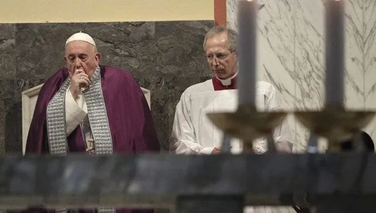
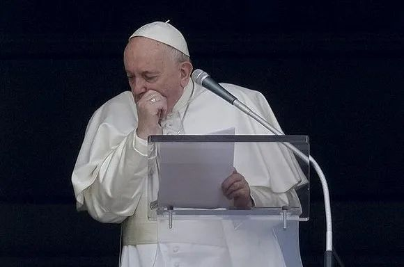

因身体微恙取消弥撒后，83岁教皇将“居家办公”
原文链接 备份链接 图片来源：Vatican Media “ 教皇在年轻时曾因肺结核切除了一边肺的一小部分，目前除了腿部疼痛需定期治疗外，总体身体状况良好。 ” 继前一天因“身体不适”取消了一场弥撒后，83岁的罗马天主教皇方济各在周五取消 …

图片来源：Twitter
作者：王博雅琪 本文来源：环球网
“
俄塔社注意到，受新冠肺炎疫情影响，方济各“身体不适”这件事引发了一些媒体猜测。梵蒂冈近日还专门采取了一些措施以防止新冠病毒传播，比如在圣彼得广场上，要求信徒之间必须保持一定距离。
”
罗马天主教教皇方济各又因“身体不适”取消工作安排。俄塔社称，方济各3月1日出席传统布道会时宣布，因患感冒自己将无法参加即将到来的传统精神静修周活动。据俄塔社描述，宣布这一消息时，方济各还咳嗽了两声。《纽约每日新闻》表示，这是方济各自担任罗马教皇7年以来首次缺席该活动。

3月1日，方济各出席布道会。图自美联社
“请大家为今晚在（罗马近郊）阿里恰开始的精神静修周祈祷”，“今年，感冒让我无法参加这一活动。”俄塔社称，当地时间3月1日，方济各出席传统布道会时宣布了这一消息，期间他还咳嗽了两声。
不过，方济各同时补充说，自己将在梵蒂冈进行精神静修。据俄塔社介绍，往常，方济各会与罗马神职人员一同前往罗马近郊参与这一活动。
这并非方济各首次因“身体不适”取消工作安排。据美联社此前报道，上周三（26日），方济各身体不适，出现咳嗽和打喷涕的症状。第二天，他取消了一场原本与罗马神职人员共同出席的弥撒，并在周五缺席了一场会议。《纽约每日新闻》评论说，在三天的时间里，方济各缺席了两场原定举行的官方活动，这是这位罗马教皇做出的罕见决定——他从未缺席过这么多活动。
俄塔社注意到，受新冠肺炎疫情影响，方济各“身体不适”这件事引发了一些媒体猜测。梵蒂冈近日还专门采取了一些措施以防止新冠病毒传播，比如在圣彼得广场上，要求信徒之间必须保持一定距离。
梵蒂冈，位于意大利首都罗马西北高地上。综合美国有线电视新闻网（CNN）及《欧洲时报》3月1日最新报道，意大利民防局当天宣布，该国累计新冠肺炎确诊病例达1694例，死亡病例34例。目前，意大利成亚洲以外新冠肺炎确诊病例数量最多的国家。

原文链接 备份链接 图片来源：Vatican Media “ 教皇在年轻时曾因肺结核切除了一边肺的一小部分，目前除了腿部疼痛需定期治疗外，总体身体状况良好。 ” 继前一天因“身体不适”取消了一场弥撒后，83岁的罗马天主教皇方济各在周五取消 …
原文链接 备份链接 根据当地时间3月1日18时意大利卫生部公布的最近数据，意大利现有新冠病毒患者1577例，死亡34例，治愈83例，累计确诊感染新冠病毒总人数为1694例，较2月29日18时新增566例，其中重症140例，新增5例死亡病 …
原文链接 备份链接 中国停止武汉的航班，延迟了病毒蔓延到其他国家的步伐。在七、八个星期的时间里，我们对病毒的了解已经非常充分，这归功于国际协作和分享信息。我听说中国展开了多项试验，世卫组织也在与中方合作，看哪些药物能被证明为有效 伦敦卫生 …
原文链接 备份链接 作为一名医生，我十分清楚在每一个新冠肺炎患者背后，都有一个备受煎熬的家庭，这个坎能不能过去，需要大家一起扛。而随着武汉封城时间越来越长，一些非新冠肺炎的病患，同样也在默默承受着煎熬。 口述 | 郑 华 整理 | …
原文链接 备份链接 非常时期，武汉成了全国人民挂念、祈福的城市。封城后，武汉人民的真实生活是什么样？随着抗“疫”有条不紊的进行，武汉发生了哪些变化？还存在哪些问题？ 正和岛自1月26日起特别推出“叶青专栏”。叶青是一位定居武汉40年的市 …